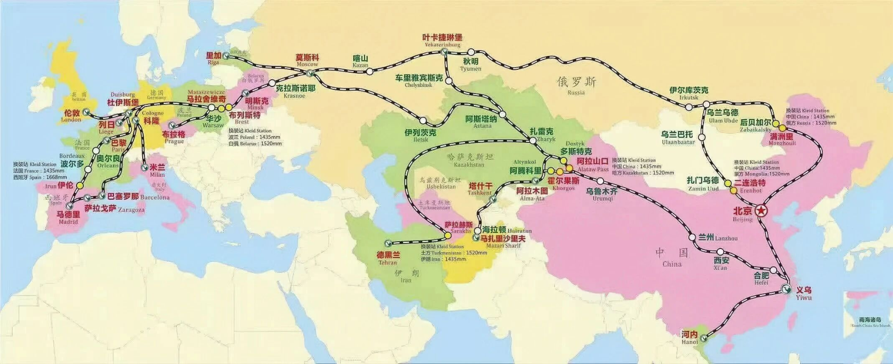
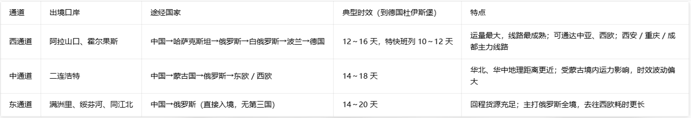

中欧班列·国内火车出口五大口岸
铁路运输百科 · 阅读约 6 分钟
中欧班列是往来于中国与欧洲以及"一带一路"沿线各国的集装箱国际铁路联运班列，分为西、中、东三大出境通道。本文讲清口岸换装、三大通道走向、五大出境口岸，帮你快速建立铁路运输知识框架。
为什么出境必须换装？ 中国标准轨距为 1435mm；俄罗斯、蒙古、哈萨克斯坦等国为宽轨 1520mm。轨距不同，列车无法直接通行，因此所有中国出境口岸都是换装点——集装箱要整体吊装、换到另一轨距的车厢上继续运输。

中欧班列三大出境通道及国境换装口岸示意图
一、西通道（新疆出境 · 对接哈萨克斯坦）
- 出境口岸：阿拉山口、霍尔果斯
- 路线：国内（西安、重庆、成都、义乌等）→ 乌鲁木齐 → 阿拉山口/霍尔果斯 → 哈萨克斯坦 → 俄罗斯 → 白俄罗斯 → 波兰 → 西欧（杜伊斯堡、马德里、巴黎等）
- 特点：运量最大，通往欧洲腹地，也可分支去往中亚各国。
二、中通道（内蒙古出境 · 过境蒙古国）
- 出境口岸：二连浩特
- 路线：国内（郑州、合肥等）→ 二连浩特 → 蒙古国（扎门乌德）→ 俄罗斯 → 欧洲
- 特点：华北、华中货源距离更近，经蒙古抵达俄罗斯、北欧、东欧。
三、东通道（内蒙古/东北出境 · 对接俄罗斯）
- 出境口岸：满洲里、绥芬河、同江北
- 路线：国内各地 → 满洲里 → 俄罗斯（后贝加尔），接入西伯利亚大铁路，向西通往欧洲
- 特点：回程班列货源充足，适合东北、华南货源，不经第三国直接进入俄罗斯。
四、五大口岸速查
| 口岸 | 所属通道 | 对接方向 |
|---|
| 阿拉山口 | 西通道 | 哈萨克斯坦 |
| 霍尔果斯 | 西通道 | 哈萨克斯坦 |
| 二连浩特 | 中通道 | 蒙古国 |
| 满洲里 | 东通道 | 俄罗斯 |
| 绥芬河 | 东通道 | 俄罗斯 |
五、一句话总结
中欧班列依托西、中、东 3 条铁路出境通道，从西安、重庆、成都、郑州、义乌等集结城市出发，通过阿拉山口、霍尔果斯、二连浩特、满洲里等国境口岸换轨，横跨亚欧大陆，通达俄罗斯、中亚、欧洲多国，是亚欧陆路集装箱运输的大动脉。

中欧班列三大出境通道时效表
欧洲端主要分拨枢纽为马拉舍维奇、布列斯特、杜伊斯堡；除欧洲主线外，还有向南分支通往中亚（塔什干）、伊朗（德黑兰）、阿富汗等地。如需了解具体线路与时效，欢迎联系我们咨询。
延伸阅读
返回知识列表